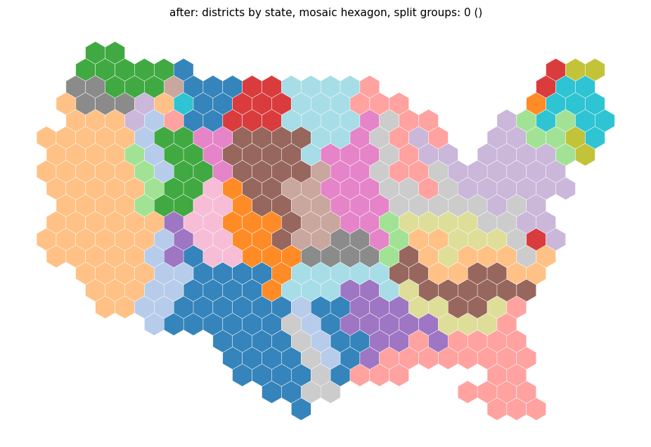
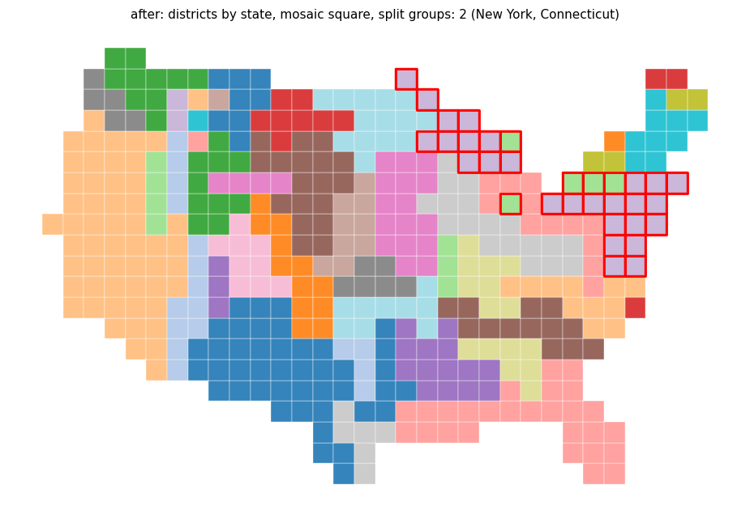
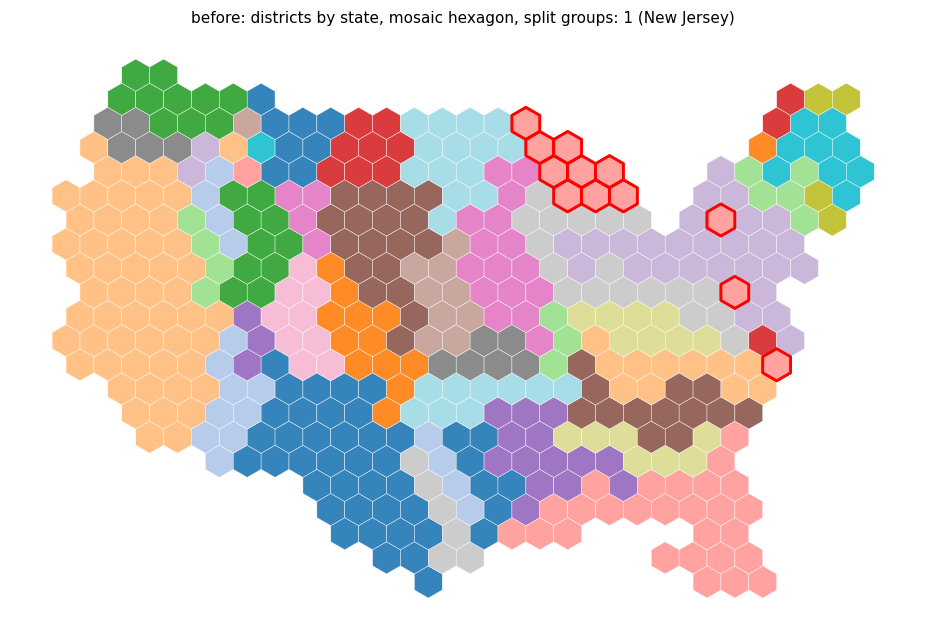
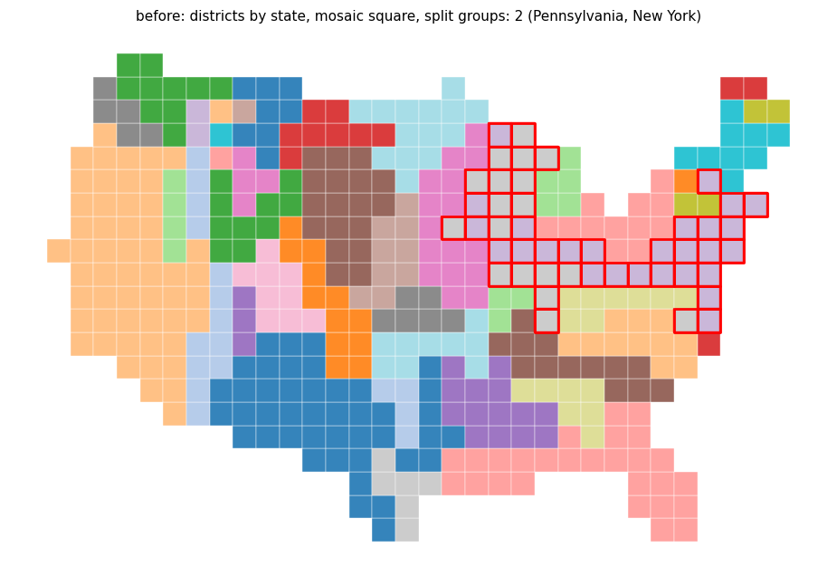

The chain search of repair_contiguity enumerates paths only while they can still reach the main body, forbids the tiles of the other satellites correctly, and refuses chains that split another group further.
Part of #191.
_enumerate_paths in geo_utils/contiguity.py): a backward breadth-first search gives every tile its distance to the main body; the heap is keyed by path length plus that distance, and prefixes that cannot finish within max_len are not pushed. Chains and their order are unchanged.comps[2:], but satellites are processed in distance order, so a satellite other than comps[1] forbade its own tiles, comps[1] was not forbidden, and the satellite found no path. The set is now built from comps[1:] minus the current satellite's tiles.tests/test_geo_utils_contiguity_search.py (pruned against plain enumeration, a satellite that is not the second largest component, states with 350 regions and squares); changelog entries.| Input (mosaic) | Split groups / non-contiguous regions |
|---|---|
| Districts by state, hexagon | 1 / 0 -> 0 / 0 |
| Districts by state, square | 2 / 0 -> 2 / 0 (other groups: PA and NY -> NY and CT) |
| Districts by division, hexagon | 0 / 0 -> 0 / 0 |
| Districts by division, square | 1 / 0 -> 0 / 0 |
| States with 150, 300 (morph) and 350 regions, hexagon | 0 / 0 -> 0 / 0 |
| States with 350 regions, square | 0 / 1 -> 0 / 0 |
| Texas, hexagon and square | 0 / 0 -> 0 / 0 |
With the satellite fix alone, states with 350 regions and squares got worse (2) and districts by division with squares stayed at 1; the guard fixes both. TestRingSwapbackReach::test_us_states_needs_more_than_8_hops[False-350] passes at the default 60 candidate paths (the last satellites of one group were blocked on all 60 candidates before; the old code solved it only by path-dependent luck).
| Input (mosaic) | Wall time (s) |
|---|---|
| Districts by state, hexagon | 12.7 -> 4.1 |
| Districts by state, square | 10.1 -> 5.6 |
| Districts by division, hexagon | 6.9 -> 3.9 |
Chain repair alone on districts by state with hexagons: 3.79 s -> 0.02 s. pytest -k "contiguity or mosaic or voronoi or symbol": 575 passed.
Figures (split groups outlined in red):
!before, hexagon !after, hexagon !before, square !after, square

after_hexagon.png

after_square.png

before_hexagon.png

before_square.png